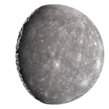
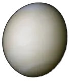
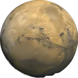
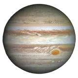
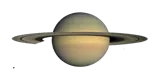

← Night sky tonight · Updated 21 November 2026
Night sky tonight in Pune
Saturday 21 November 2026. Mercury, Venus, Mars, Jupiter and Saturn are up tonight. The Moon is a waxing gibbous (88% lit).
Planets you can see tonight

Mercury
When: from about 6:04 am until dawn.
Where: look east-southeast, about 10° up, around 6:04 am.
Low near the horizon, so you need a clear view that way.

Venus
When: from about 4:54 am until dawn.
Where: look east-southeast, about 26° up, around 6:04 am.
Easy to see with your eyes.

Mars
When: from about 12:54 am until dawn.
Where: look east-southeast, about 82° up, around 6:04 am.
Visible to the eye.

Jupiter
When: from about 12:44 am until dawn.
Where: look southeast, about 83° up, around 6:04 am.
Easy to see with your eyes.

Saturn
When: from dusk until about 2:24 am.
Where: look south, about 72° up, around 9:04 pm.
Visible to the eye.
With binoculars or a small telescope you can also find Uranus and Neptune.
The Moon tonight
The Moon is a waxing gibbous, 88% lit, and growing each night. Moonrise: 3:11 pm. Moonset: 4:07 am. A bright Moon washes out faint stars and meteors. See the Moon calendar →
Coming up
How to see the planets
- Planets do not twinkle like stars: look for a steady, bright point.
- Venus and Jupiter are the brightest things in the night sky after the Moon. Mars looks orange, Saturn pale yellow.
- Find a place with a clear view of the horizon in the direction given, away from bright lights. Give your eyes 10 minutes to get used to the dark.
- Binoculars show Jupiter’s four big moons as tiny dots in a line. A small telescope shows Saturn’s rings.
Times are for central Pune (Asia/Kolkata time) and can differ by a few minutes across the city. Planets are listed when they are at least 8° above the horizon after dusk. Open the live sky for your exact place →